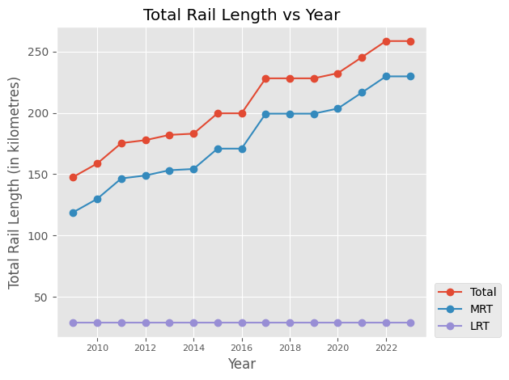
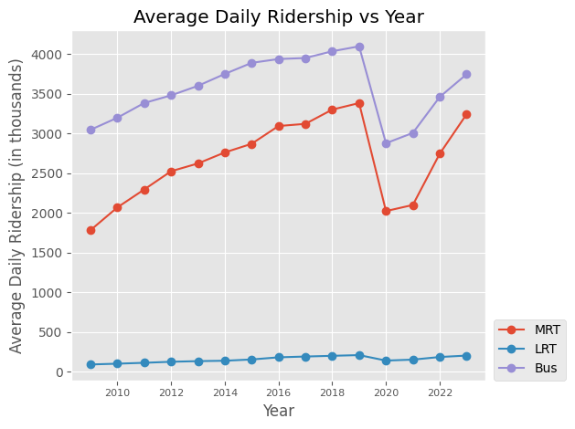

Visualising Singapore’s Public Transport Data
Introduction
In this project, I aim to visualise Singapore’s public transport data to explore key trends, patterns, and insights that can inform decision-making and improve user understanding. The dataset was found here. The project involves first cleaning the data, followed by creating visualisations. This blog summarises my thought process, while the complete, runnable code and results are available here.
import pandas as pd
import numpy as np
import matplotlib.pyplot as pltData Cleaning
Reformat dataset
The original dataset was structured with years as columns and variables as rows, so I transposed it to reformat the data for easier visualisation.
my_file = 'PublicTransportOperationAndRidershipAnnual.csv'
df = pd.read_csv(my_file)
df_transposed = df.set_index('DataSeries').transpose()
df_transposed = df.set_index('DataSeries').transpose().reset_index()
df_transposed = df_transposed.rename(columns={'index': 'year'})The final dataset contains columns year, Rail Length, MRT Rail Length, LRT Rail Length, MRT km operated, LRT km operated, Average daily ridership (MRT), Average daily ridership (LRT), Average daily ridership (Bus) and Average Daily Trip - Point-To-Point (P2P) Transport (Taxis And Private Hire Cars).
Renaming columns
I renamed the columns using lowercase letters and underscores for consistency and ease of use in code.
df_transposed = df_transposed.rename(columns = {'Rail Length': 'total_rail_length',
' Mass Rapid Transit (MRT)': 'mrt_rail_length',
' Light Rail Transit (LRT)': 'lrt_rail_length',
'MRT km Operated': 'mrt_km_operated',
'LRT km Operated': 'lrt_km_operated',
'Average Daily Ridership - MRT': 'mrt_avg_daily_ridership',
'Average Daily Ridership - LRT': 'lrt_avg_daily_ridership',
'Average Daily Ridership - Public Bus': 'bus_avg_daily_ridership',
'Average Daily Trip - Point-To-Point (P2P) Transport (Taxis And Private Hire Cars)': 'p2p_avg_daily_trip'})Fill in missing values
The dataset uses ‘na’ to denote missing values, which I replaced with NaN for compatibility with pandas dataframes. For missing LRT rail length data, I replaced it with 0, as the sum of MRT and LRT rail lengths must match the total rail length.
df_transposed = df_transposed.replace(['na'], pd.NA)
lrt_missing = df_transposed['lrt_rail_length'].isna()
df_transposed.loc[lrt_missing, 'lrt_rail_length'] = 0Converting datatypes to numeric
The variables are of object type, so I converted them to numeric values.
df_transposed = df_transposed.apply(pd.to_numeric, errors='coerce')Dropping unnecessary columns
Since the analysis focuses only on public transport, I dropped the p2p_avg_daily_trip column. Additionally, the dataset has significant gaps for years before 2009, so I removed those rows to maintain data quality.
df_transposed = df_transposed.drop(columns = ['p2p_avg_daily_trip'])
df_transposed = df_transposed[0:15]Plotting data
Plotting rail length against year
plt.style.use('ggplot')
df_sorted = df_transposed.sort_values(by='year')
plt.plot(df_sorted['year'], df_sorted['total_rail_length'], marker='o', label="Total")
plt.plot(df_sorted['year'], df_sorted['mrt_rail_length'], marker='o', label="MRT")
plt.plot(df_sorted['year'], df_sorted['lrt_rail_length'], marker='o', label="LRT")
plt.xlabel('Year')
plt.ylabel('Total Rail Length (in kilometres)')
plt.title('Total Rail Length vs Year')
plt.xticks(fontsize=8)
plt.yticks(fontsize=10)
plt.legend(loc=(1.02, 0))
plt.tight_layout()
plt.show()
Plotting riderships against year
plt.plot(df_sorted['year'], df_sorted['mrt_avg_daily_ridership'], marker='o', label='MRT')
plt.plot(df_sorted['year'], df_sorted['lrt_avg_daily_ridership'], marker='o', label='LRT')
plt.plot(df_sorted['year'], df_sorted['bus_avg_daily_ridership'], marker='o', label='Bus')
plt.xlabel('Year')
plt.ylabel('Average Daily Ridership (in thousands)')
plt.title('Average Daily Ridership vs Year')
plt.xticks(fontsize=8)
plt.yticks(fontsize=10)
plt.legend(loc=(1.02, 0))
plt.tight_layout()
plt.show()
Insights
One of the key insights from the analysis is the positive correlation between rail length and riderships. As the MRT network expands over the years, ridership has increased accordingly, suggesting that greater connectivity encourages more people to use public transport. In contrast, LRT ridership has remained relatively stable, which aligns with the fact that the LRT network has not seen much expansion. This highlights how infrastructure development, especially in expanding the rail network, plays a crucial role in shaping public transport usage patterns.
Another notable insight is the sharp dip in ridership across all modes of transport in 2020. This drop corresponds with the onset of the COVID-19 pandemic, particularly during the circuit breaker lockdown period in Singapore. During this time, travel restrictions, the shift to remote work, and health concerns significantly reduced commuting.
Encouragingly, from 2021 onwards, ridership levels have shown signs of recovery, indicating that as restrictions eased and daily life resumed, more people returned to using public transport.
These trends highlight how external factors, such as network expansion and global events like COVID-19, can significantly impact public transport usage patterns in Singapore.
Future work
Looking ahead, I would like to forecast ridership trends beyond the latest year in the dataset (2023). Building time series models could help predict future usage patterns for MRT, LRT, and bus services, providing valuable insights for planning and policy decisions.
Additionally, exploring the impact of new transport initiatives, such as the Thomson-East Coast Line, and incorporating external factors like population growth and economic changes could make the forecasts more robust and meaningful.